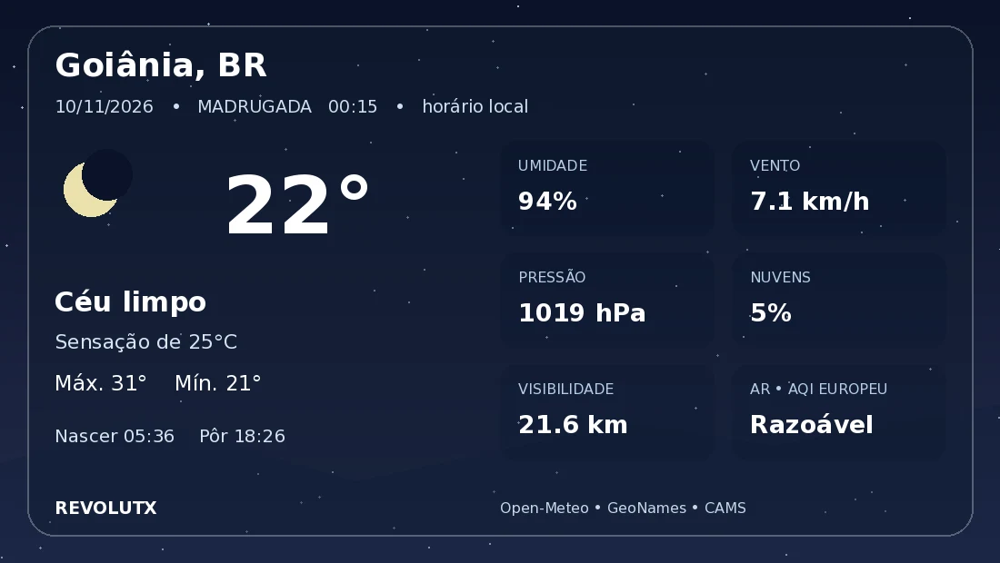

Conversa com contexto
Responde por menção ou em canais habilitados pela equipe. Usa mensagens relevantes e referências de resposta para acompanhar o assunto e distinguir os participantes.
CONVERSARUM ASSISTENTE PARA A SUA COMUNIDADE
Um espaço para perguntar, aprender e trocar ideias. O RevolutX reúne inteligência artificial e ferramentas úteis no Discord que você já usa.
Conversa por menção. Configuração por servidor. Você no controle.
Conversa / Estudo / Utilidades / Moderação
01 / RECURSOS
Da dúvida rápida à pesquisa mais cuidadosa, com ferramentas que ajudam a organizar o servidor.
Responde por menção ou em canais habilitados pela equipe. Usa mensagens relevantes e referências de resposta para acompanhar o assunto e distinguir os participantes.
CONVERSARExplicações, análise de argumentos e consulta a fontes acadêmicas. Matemática, filosofia, história, política, teologia e ciências, com referências quando recuperadas pela pesquisa.
APRENDERClima, tradução, tarefas, lembretes, enquetes e análise de imagens. Crie embeds com prévia e fixe mensagens com os comandos apropriados.
ORGANIZARAções manuais de moderação, como banir e silenciar, respeitam as permissões do Discord. A equipe também pode ajustar o tom, o apelido e a foto do bot por servidor.
ADMINISTRARUM COMANDO, UMA INFORMAÇÃO ÚTIL
Temperatura, sensação térmica, vento e outras condições locais em uma leitura simples. O visual acompanha o dia e a noite da cidade consultada.
/clima GoiâniaExperimente no DiscordDados de Open-Meteo. Qualidade do ar exibida quando disponível.

02 / NA PRÁTICA
Copie um exemplo e substitua @RevolutX pela menção real ao bot. No Discord, /ajuda apresenta a lista completa.
@RevolutX explique a ideia de evoluçãoComece uma conversa ou peça uma explicação.
@RevolutX pesquisar: história da imprensaPeça uma consulta a fontes externas sobre um tema.
@RevolutX acadêmico iniciar teoria dos conjuntosAbra uma sessão de estudo dedicada ao assunto.
/clima São PauloConsulte o clima local. Na opção cidade, informe o nome desejado.
@RevolutX traduzir para inglês: bom diaTraduza um texto indicando o idioma de destino.
@RevolutX tarefa adicionar: revisar o capítuloOrganize suas tarefas. Consulte com “@RevolutX tarefas”.
@RevolutX analisar imagem: explique este gráficoAnexe uma imagem à mensagem para solicitar a análise.
@RevolutX embed: Aviso | Reunião às 19h | #5865F2Veja uma prévia e confirme a publicação. Exige Gerenciar servidor.
@RevolutX personalidade: responda de forma objetivaAjuste o tom neste servidor. Exige Gerenciar servidor.
@RevolutX fixarResponda à mensagem desejada. Exige Gerenciar mensagens.
Nenhum comando encontrado. Tente outro termo ou selecione “Todos”.
03 / PRIMEIROS PASSOS
Comece com o essencial e ajuste o restante conforme a rotina da sua comunidade.
Escolha seu servidor na autorização do Discord e revise as permissões solicitadas.
Use /ajuda para consultar os recursos. Uma menção ao bot já inicia a conversa.
A equipe pode habilitar um canal de conversa automática e personalizar o perfil do bot para o servidor.
04 / DÚVIDAS FREQUENTES
Alguns detalhes sobre o funcionamento do RevolutX.
Você pode conversar mencionando o bot ou respondendo a uma mensagem dele. A equipe também pode ativar a conversa automática em canais específicos. Essa configuração pode ser desativada a qualquer momento.
Não. Ações como banir e silenciar dependem de comandos e das permissões da equipe. A versão atual não aplica punições automáticas por atingir uma quantidade de avisos.
O bot consulta serviços externos quando a pergunta exige pesquisa ou quando você solicita uma busca. As fontes são selecionadas conforme o assunto. A disponibilidade depende dos serviços consultados, e respostas de IA podem conter erros: confira as referências, especialmente em trabalhos acadêmicos.
Sim. Membros com Gerenciar servidor podem definir uma orientação de tom e alterar o apelido e a foto do bot naquele servidor. Isso não muda o perfil das outras comunidades. Os exemplos estão em /ajuda.
Há análise de imagens e edições simples, como girar, espelhar, reduzir e converter para cinza. Criação e edição generativa só ficam disponíveis quando configuradas pelo responsável do bot e dependem de cotas próprias.
O bot usa um histórico curto e trechos recentes do canal para acompanhar a conversa. As opções de memória pessoal estão em /memoria-ia; limpar a conversa e apagar memórias são ações diferentes. Perguntas e os trechos necessários podem ser enviados aos provedores de IA usados pelo bot.
NOS VEMOS NO DISCORD